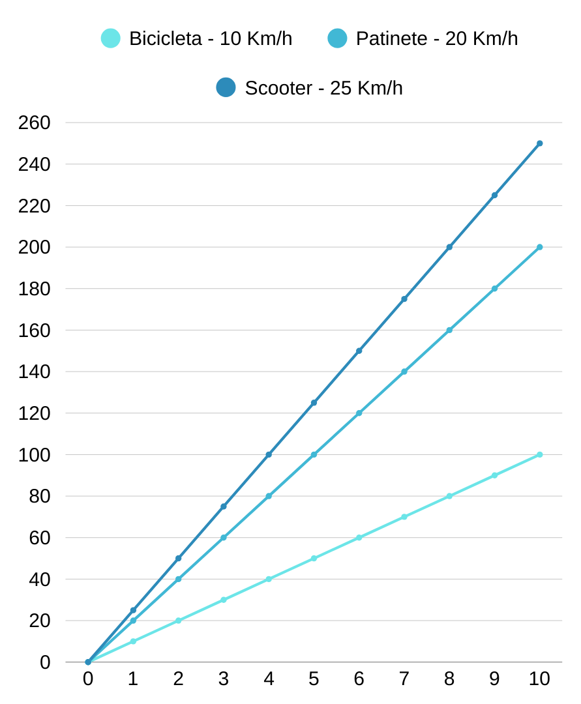
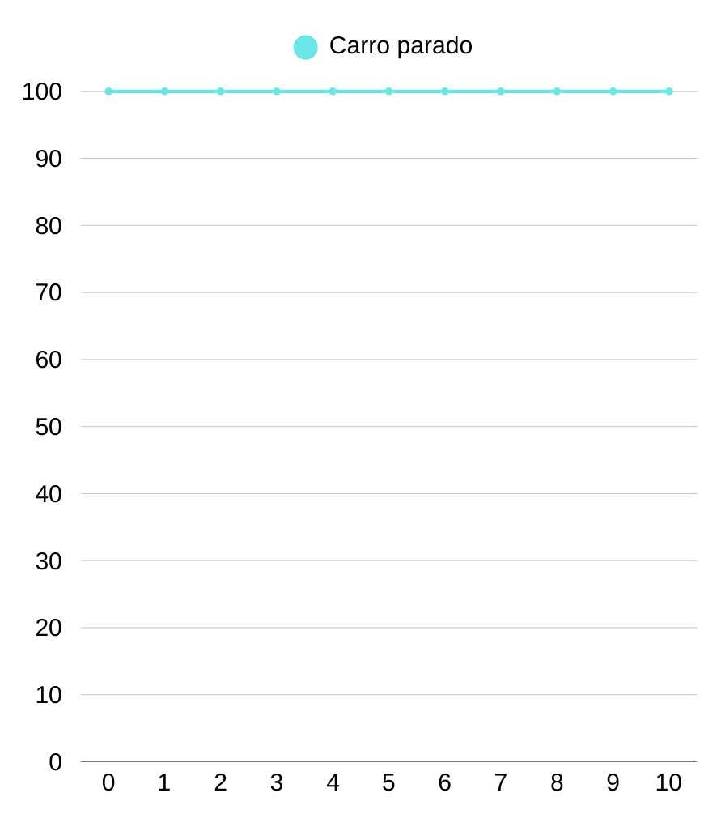
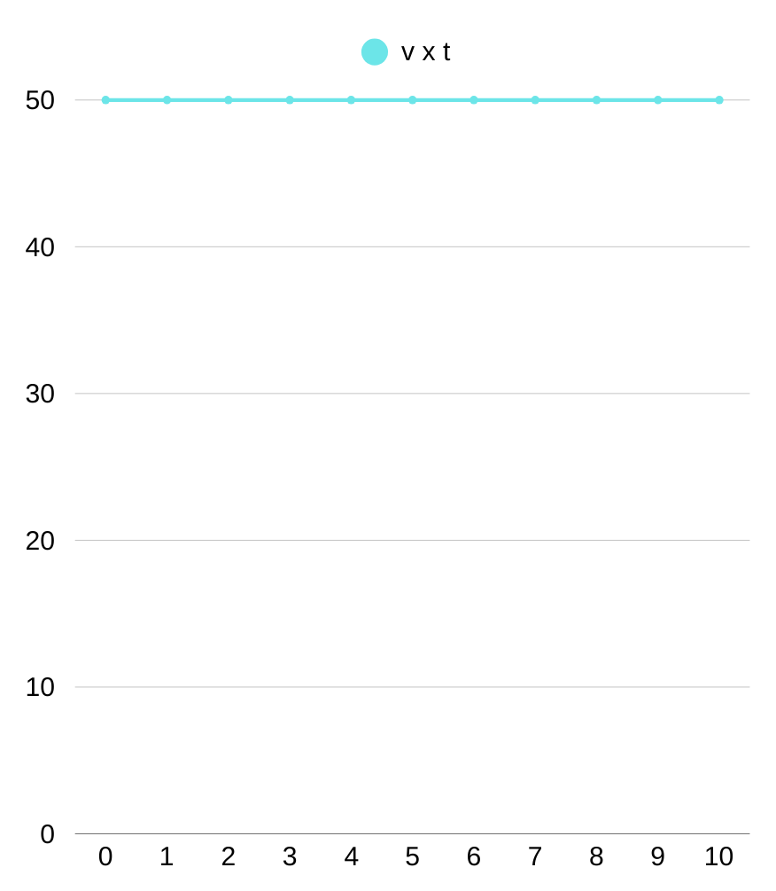

🎯 Por que estudar gráficos do MRU?
O Movimento Retilíneo Uniforme (MRU) é aquele em que um objeto se move em linha reta com velocidade constante — sem acelerar, frear ou mudar de direção.
Os gráficos ajudam a visualizar esse movimento e a entender como a posição e a velocidade mudam com o tempo. Eles são ferramentas poderosas usadas em física, engenharia, transporte e até em radares inteligentes.
Nesta página, vamos aprender a ler, interpretar e construir os principais gráficos do MRU.
📈 Gráfico de Posição × Tempo (s × t)
Este gráfico mostra como a posição de um objeto muda ao longo do tempo.
No MRU, esse gráfico é sempre uma reta inclinada. A inclinação dessa reta representa a velocidade do corpo.
- Reta mais inclinada → maior velocidade
- Reta menos inclinada → menor velocidade
- Reta horizontal → objeto parado (velocidade zero)
Exemplo: Um carro permanece na posição 100 km durante todo o tempo. Seu gráfico será uma reta horizontal em s = 100 — ele está em repouso.
🔍 Como Calcular a Velocidade a Partir do Gráfico (s × t)
Sabemos que a velocidade média no MRU é dada pela fórmula:
v = Δs / Δt
Onde:
v = velocidade (em m/s ou km/h)
Δs = variação da posição (posição final – posição inicial)
Δt = intervalo de tempo (tempo final – tempo inicial)
Essa mesma ideia pode ser aplicada diretamente no gráfico:
- Escolha dois pontos quaisquer no gráfico (por exemplo: ponto A e ponto B).
- Subtraia as posições (Δs = s_B – s_A) e os tempos (Δt = t_B – t_A).
- Divida: v = Δs / Δt.
Exemplo: De t = 1 h a t = 3 h, um carro passa de s = 50 km para s = 150 km.
Δs = 150 – 50 = 100 km
Δt = 3 – 1 = 2 h
v = 100 / 2 = 50 km/h
📉 Gráfico de Velocidade × Tempo (v × t)
Este gráfico mostra como a velocidade varia com o tempo.
No MRU, a velocidade não muda — ela é constante. Por isso, o gráfico é uma reta horizontal.
A altura da reta indica o valor da velocidade. Quanto mais alta, maior a velocidade.
Dica importante: A área sob o gráfico (entre a reta e o eixo do tempo) representa o deslocamento total do objeto!
Área = base × altura = Δt × v = Δs

Exemplo: Um carro anda a 50 km/h por 10 horas.
Área = 10 h × 50 km/h = 500 km
Portanto, o deslocamento foi de 500 km.
⚠️ Aplicação no Trânsito
Os conceitos de gráficos do MRU são usados diariamente em tecnologias de segurança viária:
- Radares de velocidade média: medem o tempo que um carro leva entre dois pontos fixos. Com isso, calculam a velocidade média e multam quem ultrapassa o limite.
- Sistemas de controle de tráfego: usam gráficos para prever congestionamentos e otimizar sinais de trânsito.
- Assistência de frenagem automática: prevê colisões usando modelos de MRU para calcular se há tempo suficiente para frear.
💡 Dica Final: Use os Gráficos a Seu Favor
- Em provas, gráficos podem revelar informações mesmo sem contas — observe inclinações e interseções.
- Lembre-se: no s×t, a inclinação é a velocidade; no v×t, a área é o deslocamento.
- Dirigir em MRU (velocidade constante) melhora o consumo de combustível e reduz riscos.
- Treine fazer gráficos à mão — ajuda a fixar o conceito.
🧠 Conclusão
Os gráficos do MRU transformam números e fórmulas em imagens claras do movimento. Dominar sua interpretação não é só para passar de ano — é para entender o mundo físico ao seu redor.
Da próxima vez que vir um radar, lembre-se: ele está usando exatamente esses gráficos para garantir a segurança nas estradas.